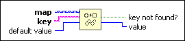

Look In Map Function
Owning Palette: Map VIs and Functions
Requires: Base Development System
Checks whether a map includes an entry with the specified key and returns the associated value of the key.

 Add to the block diagram Add to the block diagram |
 Find on the palette Find on the palette |